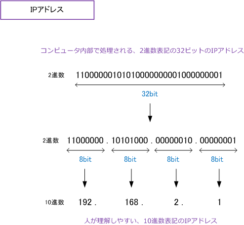
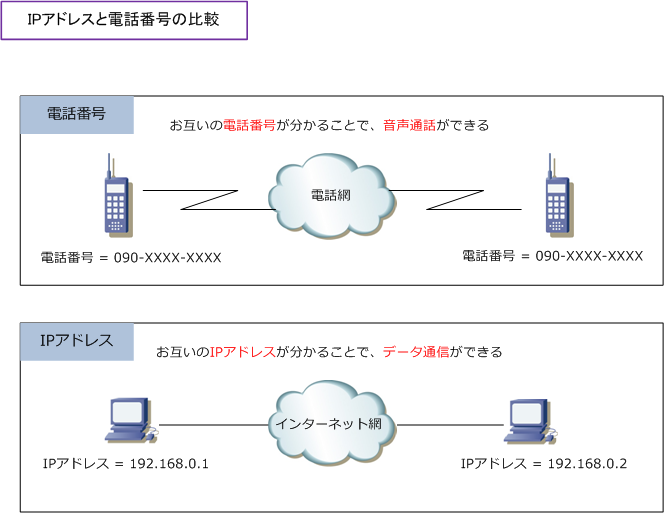
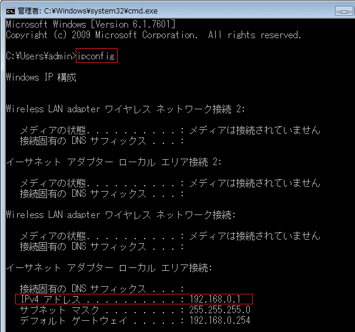
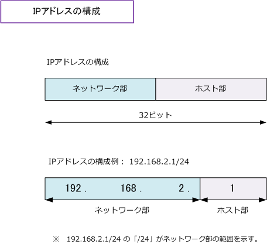
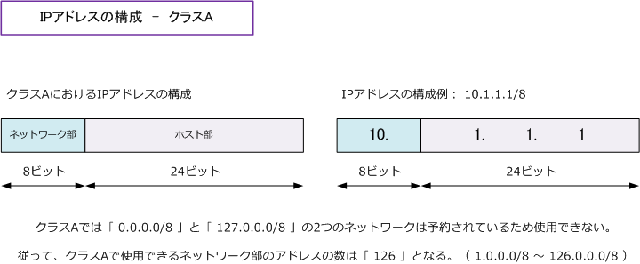
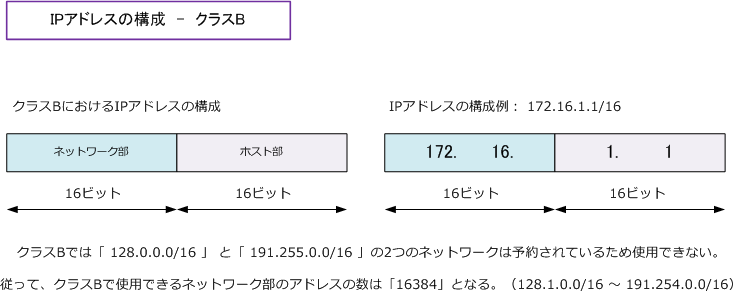
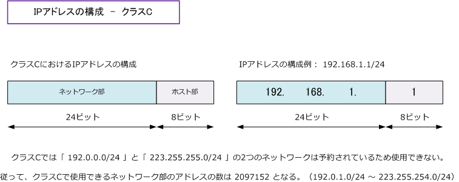

IP address
IPアドレス
IPアドレスとは、インターネットやLANなどのIPネットワークに接続されたコンピュータなどに割り 振られる識別番号のことです。IPアドレスは、IPネットワーク上の住所または電話番号のようなもの。
IPアドレスは、コンピュータ内部では2進数で処理されることから、32ビットの整数値で表されます。 しかし、人には2進数はわかりにくいため、分かりやすくするために32ビットの整数値を8ビットずつ 4つに分割して10進数でIPアドレスを表します。では、どのように10進数で表記されるのかを見ます。

※ IPアドレスは32ビットの2進数なので、2の32乗ということで 4,294,967,296 (約43億) の数があることが分かります。
今、この瞬間、あなたのPCとわたしのWebサーバとが通信していますが、それはIPアドレスによって お互いの場所を識別しているから通信が成立します。IPアドレスと電話番号を比較した図解は以下です。

2種類のIPアドレス - IPv4アドレス、IPv6アドレス
IPアドレスには、IPv4（Internet Protocol v4）と IPv6（Internet Protocol v6）の2種類があります。 IPアドレスといえば一般的にIPv4（Internet Protocol version 4）アドレスのことを指しており、IPv6 をさす場合はIPv6アドレスと言います。IPv4アドレスは世界的に利用者が急増したことにより割り当てる IPアドレスがなくなってきており、それを解消するために開発されたのがIPv6です。現在、家庭や企業で 最も使用されているIPアドレスはIPv4アドレスであり、IPv6アドレスの普及にはまだ時間がかかります。
自分が現在使用しているIPアドレス
現在、自分が使用しているIPアドレスを確認するためには、Windowsの場合は以下手順を実行します。 スタートボタン ⇒「プログラムとファイルの検索」でcmdと入力 ⇒ 開いた画面上で ipconfig と入力。

例えば、現在当方が使用しているIPアドレスは「192.168.0.1」のIPアドレスであることが分かります。
IPアドレスの構成
32ビットのIPアドレスは、ネットワーク部とホスト部の2つによって構成されます。ネットワーク部は、 各ホストが所属するネットワークを示します。ホスト部は、ネットワークに所属する各ホストを示します。 例えば "192.168.2.1/24" のIPアドレスでは "/24" は24 ビットがネットワーク部という意味となるので "192.168.2" までがネットワーク部であることを示して、残りの"1"がホスト部であることを示しています。

IPアドレスのクラス
IPアドレスは、クラスA、クラスB、クラスC、クラスD、クラスEの5つのアドレスクラスに分類されます。 これらのクラスでは、IPアドレスのネットワーク部とホスト部がどの部分に該当するのかを定義しており また、各クラスにおいて使用できるアドレス範囲、そして、各クラスにおける用途などを定義しています。
| クラス | アドレス範囲 | 定義 | 用途 |
|---|---|---|---|
| クラスA | 0.0.0.0 ～ 127.255.255.255 | ネットワーク部 (8bit) ホスト部 (24bit ) | 大規模ネットワークでの使用 |
| クラスB | 128.0.0.0 ～ 191.255.255.255 | ネットワーク部 (16bit) ホスト部 (16bit) | 中規模ネットワークでの使用 |
| クラスC | 192.0.0.0 ～ 223.255.255.255 | ネットワーク部 (24bit) ホスト部 (8bit) | 小規模ネットワークでの使用 |
| クラスD | 224.0.0.0 ～ 239.255.255.255 | 下位28bitがマルチキャストグループID | マルチキャスト用のアドレス |
| クラスE | 240.0.0.0 ～ 255.255.255.255 | 現在、割り当てが定義されていない | 実験用のアドレス |

クラスAでは、第1オクテット (8bit) がネットワーク部であるので、残りの3つのオクテット (24bit) が ホスト部となります。つまりクラスAでは1つのネットワーク (セグメント) で割り当てられるホスト部の アドレスは16,777,214個 (2の24乗 -2) となります。この"-2"は、各ネットワーク部で予約されている ネットワークアドレスとブロードキャストアドレスのことであり、これらはホストに割り当てられません。

クラスBでは、第2オクテット (16bit) までネットワーク部であるので、残りの2つのオクテット(16bit) が ホスト部となります。つまり、クラスBでは1つのネットワーク (セグメント) で割り当てられるホスト部の アドレスは 65534個（ 2の16乗 -2 ）となります。この "-2" は各ネットワーク部において予約されている ネットワークアドレスとブロードキャストアドレスのことであり、これらはホストに割り当てられません。

クラスCでは、第3オクテット(24bit) までネットワーク部であるので、残りの1つのオクテット(8bit) が ホスト部となります。つまり、クラスCでは1つのネットワーク(セグメント)で割り当てられるホスト部の アドレスは 254個（ 2の8乗 -2 ）となります。この "-2" は、各ネットワーク部において予約されている ネットワークアドレスとブロードキャストアドレスのことであり、これらはホストに割り当てられません。
各クラスのアドレス範囲を10進数で暗記するのは大変かもしれませんが、2進数で暗記すれば簡単です。 また、その際に各アドレス範囲の"始まり"部分だけを暗記すればOKです。終わりは始まりの一つ前です。
| クラス | アドレス範囲のはじまり ( 10進数 ) | アドレス範囲のはじまり ( 2進数 ) |
|---|---|---|
| クラスA | 0.0.0.0 ～ | 00000000 ～ |
| クラスB | 128.0.0.0 ～ | 10000000 ～ |
| クラスC | 192.0.0.0 ～ | 11000000 ～ |
| クラスD | 224.0.0.0 ～ | 11100000 ～ |
| クラスE | 240.0.0.0 ～ | 11110000 ～ |